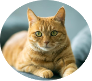
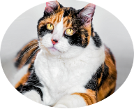
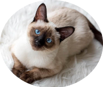

💓...LOS GATOS MÁS CARIÑOSOS...💓

RIDI
-- Condiciones medicas: Vacunas al día, es sanito.
"Conoce a Ridi, el gatito más encantador que jamás hayas visto. Con su suave pelaje naranja y sus ojos brillantes como esmeraldas, Ridi roba corazones con cada ronroneo. Es juguetón, cariñoso y está lleno de energía. Busca un hogar donde pueda explorar y recibir todo el amor que tiene para dar. Si estás listo para agregar un toque de felicidad peluda a tu vida, ¡Ridi está esperando ansiosamente conocerte!"

OLIVER
-- Condiciones medicas: Le falta una sola Vacuna de acuerdo a su edad, condición en una de sus orejitas, ya en tratamiento.
"¡Conoce a Michi, el experto en ronroneos y maestro del mimo! Este adorable minino de ojos amarillos tiene la habilidad de derretir corazones con su suave pelaje tricolor y su personalidad cariñosa. Oliver es el compañero perfecto para acurrucarse en noches frías y jugar durante los días soleados. Está buscando un hogar donde pueda ser el centro de atención y recibir todo el cariño que merece. ¿Estás listo para darle a Oliver el hogar amoroso que se merece?"

GASTÓN
-- Condiciones medicas: Vacunas al día, tiene una pequeña condición un una de sus patas, que le impide desplazarse bien.
"¿Estás listo para ser hechizado por la belleza y gracia de Gastón? Este gatito de pelaje bicolor en degrade como la noche y ojos cautivadores te robará el corazón en un instante. Gastón es tranquilo, elegante y posee una dulzura que no se puede resistir. Está en busca de un hogar amoroso donde pueda ser el rey indiscutible y recibir todo el afecto que necesita. Si estás buscando un compañero leal y lleno de amor, ¡Gastón es la elección perfecta para ti!"